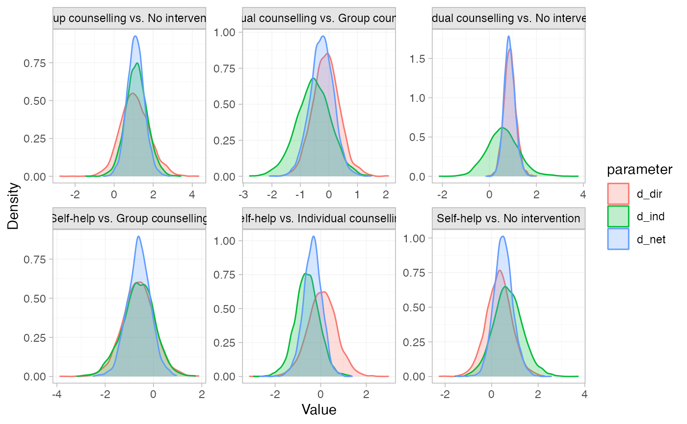
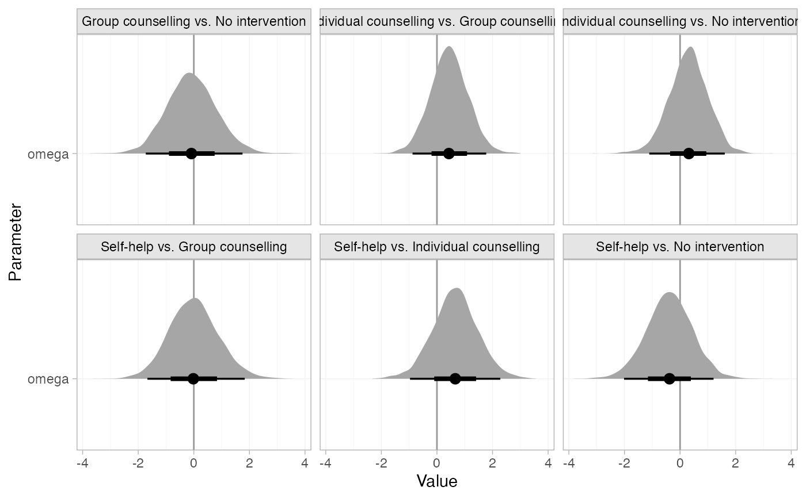
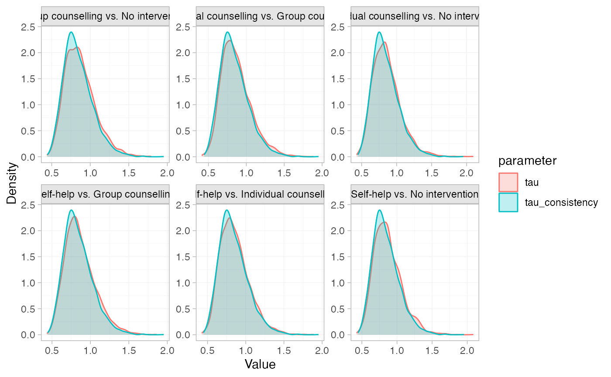

Produce summary plots of node-splitting models
Arguments
- x
A
nodesplit_summaryobject.- ...
Additional arguments passed on to the underlying
ggdistplot stat, see Details.- pars
Character vector specifying the parameters to include in the plot, choices include
"d"for the direct, indirect, and network estimates of relative effects,"omega"for the inconsistency factor, and"tau"for heterogeneity standard deviation in random effects models. Default is"d".- stat
Character string specifying the
ggdistplot stat to use. The default"dens_overlay"is a special case, producing an overlaid density plot.- orientation
Whether the
ggdistgeom is drawn horizontally ("horizontal") or vertically ("vertical"), default"horizontal".- ref_line
Numeric vector of positions for reference lines, by default no reference lines are drawn.
Details
Plotting is handled by ggplot2 and
the stats and geoms provided in the ggdist
package. As a result, the output is very flexible. Any plotting stats
provided by ggdist may be used, via the argument stat. The default
"dens_overlay" is a special exception, which uses
ggplot2::geom_density(), to plot
overlaid densities. Additional arguments in ... are passed to the
ggdist stat, to customise the output.
Alternative stats can be specified to produce different summaries. For
example, specify stat = "[half]eye" to produce (half) eye plots, or stat = "pointinterval" to produce point estimates and credible intervals.
A full list of options and examples is found in the ggdist vignette
vignette("slabinterval", package = "ggdist").
A ggplot object is returned which can be further modified through the
usual ggplot2 functions to add further
aesthetics, geoms, themes, etc.
Examples
# \donttest{
# Run smoking node-splitting example if not already available
if (!exists("smk_fit_RE_nodesplit")) example("example_smk_nodesplit", run.donttest = TRUE)
# }
# \donttest{
# Summarise the node-splitting results
(smk_nodesplit_summary <- summary(smk_fit_RE_nodesplit))
#> Node-splitting models fitted for 6 comparisons.
#>
#> ------------------------------ Node-split Group counselling vs. No intervention ----
#>
#> mean sd 2.5% 25% 50% 75% 97.5% Bulk_ESS Tail_ESS Rhat
#> d_net 1.11 0.44 0.28 0.82 1.10 1.39 2.00 1803 1757 1
#> d_dir 1.07 0.75 -0.32 0.57 1.04 1.56 2.65 3298 2736 1
#> d_ind 1.15 0.55 0.08 0.79 1.14 1.50 2.26 1954 2384 1
#> omega -0.07 0.89 -1.73 -0.67 -0.09 0.50 1.75 2445 1902 1
#> tau 0.87 0.20 0.56 0.72 0.84 0.98 1.33 1200 1669 1
#> tau_consistency 0.84 0.19 0.55 0.71 0.82 0.95 1.28 1226 1642 1
#>
#> Residual deviance: 54.1 (on 50 data points)
#> pD: 44.3
#> DIC: 98.4
#>
#> Bayesian p-value: 0.92
#>
#> ------------------------- Node-split Individual counselling vs. No intervention ----
#>
#> mean sd 2.5% 25% 50% 75% 97.5% Bulk_ESS Tail_ESS Rhat
#> d_net 0.86 0.24 0.41 0.70 0.85 1.01 1.36 1045 1532 1.00
#> d_dir 0.88 0.26 0.38 0.71 0.87 1.04 1.39 1658 2244 1.00
#> d_ind 0.58 0.67 -0.69 0.13 0.56 1.00 1.95 1211 1812 1.00
#> omega 0.30 0.70 -1.11 -0.14 0.32 0.76 1.61 1207 1833 1.00
#> tau 0.86 0.20 0.55 0.72 0.84 0.97 1.33 1200 1596 1.01
#> tau_consistency 0.84 0.19 0.55 0.71 0.82 0.95 1.28 1226 1642 1.00
#>
#> Residual deviance: 53.9 (on 50 data points)
#> pD: 44
#> DIC: 97.9
#>
#> Bayesian p-value: 0.64
#>
#> -------------------------------------- Node-split Self-help vs. No intervention ----
#>
#> mean sd 2.5% 25% 50% 75% 97.5% Bulk_ESS Tail_ESS Rhat
#> d_net 0.50 0.41 -0.27 0.24 0.50 0.76 1.35 1776 1992 1
#> d_dir 0.32 0.56 -0.76 -0.04 0.32 0.68 1.43 3718 2850 1
#> d_ind 0.71 0.63 -0.52 0.29 0.69 1.11 2.03 2175 2399 1
#> omega -0.38 0.83 -2.01 -0.92 -0.38 0.16 1.21 2281 2242 1
#> tau 0.87 0.20 0.56 0.72 0.84 0.99 1.32 1312 2012 1
#> tau_consistency 0.84 0.19 0.55 0.71 0.82 0.95 1.28 1226 1642 1
#>
#> Residual deviance: 53.9 (on 50 data points)
#> pD: 44.3
#> DIC: 98.2
#>
#> Bayesian p-value: 0.64
#>
#> ----------------------- Node-split Individual counselling vs. Group counselling ----
#>
#> mean sd 2.5% 25% 50% 75% 97.5% Bulk_ESS Tail_ESS Rhat
#> d_net -0.25 0.41 -1.07 -0.52 -0.25 0.02 0.55 2537 2194 1
#> d_dir -0.10 0.48 -1.02 -0.41 -0.10 0.21 0.91 3707 3114 1
#> d_ind -0.54 0.61 -1.78 -0.93 -0.53 -0.13 0.67 1364 1647 1
#> omega 0.44 0.68 -0.88 0.00 0.43 0.87 1.77 1235 1803 1
#> tau 0.87 0.20 0.57 0.73 0.84 0.98 1.34 1391 2434 1
#> tau_consistency 0.84 0.19 0.55 0.71 0.82 0.95 1.28 1226 1642 1
#>
#> Residual deviance: 54.1 (on 50 data points)
#> pD: 44.5
#> DIC: 98.6
#>
#> Bayesian p-value: 0.5
#>
#> ------------------------------------ Node-split Self-help vs. Group counselling ----
#>
#> mean sd 2.5% 25% 50% 75% 97.5% Bulk_ESS Tail_ESS Rhat
#> d_net -0.61 0.49 -1.56 -0.92 -0.60 -0.29 0.36 2449 2644 1
#> d_dir -0.62 0.67 -1.96 -1.05 -0.62 -0.18 0.72 3774 3110 1
#> d_ind -0.62 0.67 -2.01 -1.04 -0.60 -0.17 0.64 1878 2204 1
#> omega 0.00 0.89 -1.67 -0.60 -0.02 0.56 1.83 2192 2247 1
#> tau 0.87 0.20 0.56 0.72 0.83 0.98 1.33 1048 2001 1
#> tau_consistency 0.84 0.19 0.55 0.71 0.82 0.95 1.28 1226 1642 1
#>
#> Residual deviance: 54.4 (on 50 data points)
#> pD: 44.6
#> DIC: 99
#>
#> Bayesian p-value: 0.99
#>
#> ------------------------------- Node-split Self-help vs. Individual counselling ----
#>
#> mean sd 2.5% 25% 50% 75% 97.5% Bulk_ESS Tail_ESS Rhat
#> d_net -0.35 0.41 -1.19 -0.62 -0.34 -0.09 0.42 2188 2770 1
#> d_dir 0.07 0.64 -1.22 -0.35 0.07 0.49 1.32 3826 2819 1
#> d_ind -0.59 0.53 -1.65 -0.93 -0.60 -0.24 0.48 2040 2492 1
#> omega 0.65 0.81 -0.97 0.14 0.66 1.17 2.28 2411 2108 1
#> tau 0.86 0.19 0.57 0.72 0.83 0.96 1.30 1101 1780 1
#> tau_consistency 0.84 0.19 0.55 0.71 0.82 0.95 1.28 1226 1642 1
#>
#> Residual deviance: 53.5 (on 50 data points)
#> pD: 43.8
#> DIC: 97.3
#>
#> Bayesian p-value: 0.4
# Plot the node-splitting results
plot(smk_nodesplit_summary)

# Plot the inconsistency factors instead, change the plot stat to half-eye,
# and add a reference line at 0
plot(smk_nodesplit_summary, pars = "omega", stat = "halfeye", ref_line = 0)

# Plot a comparison of the heterogeneity under the node-split models vs.
# the consistency model
plot(smk_nodesplit_summary, pars = "tau")

# }